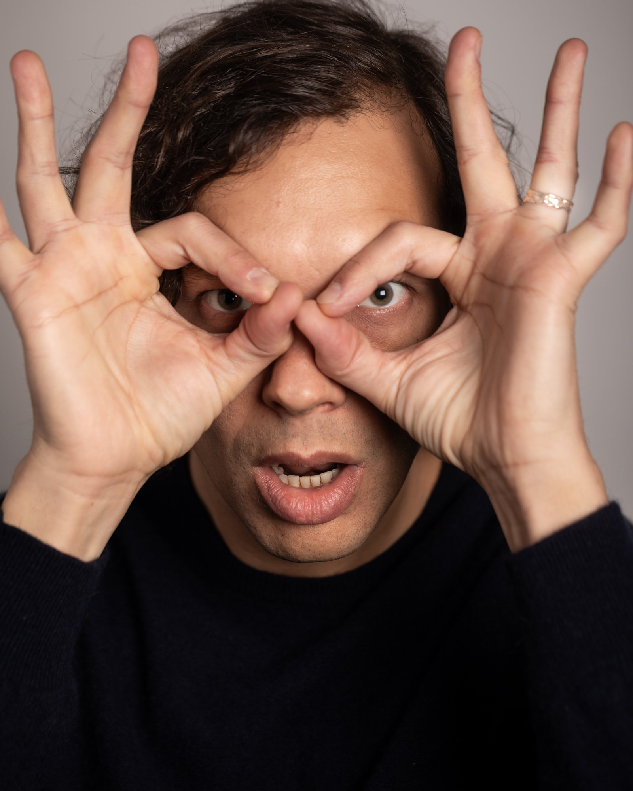
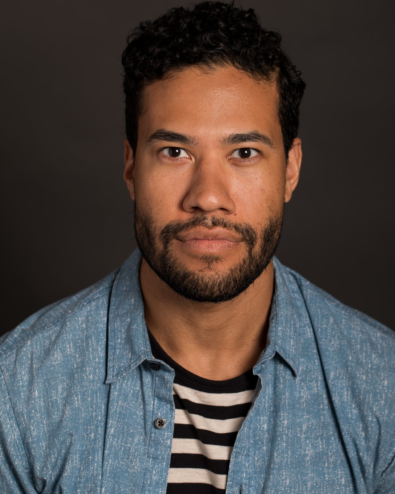
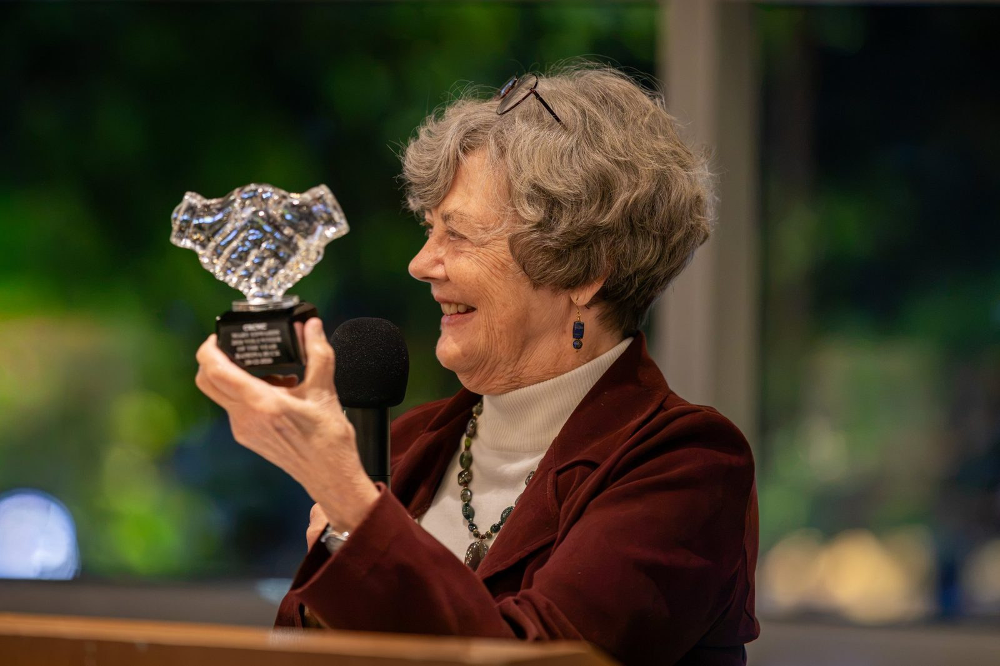
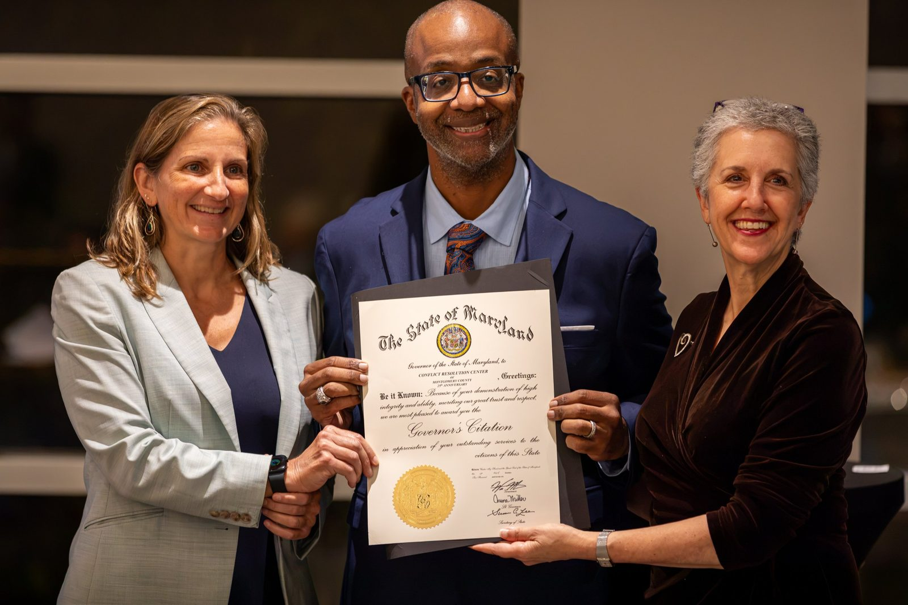
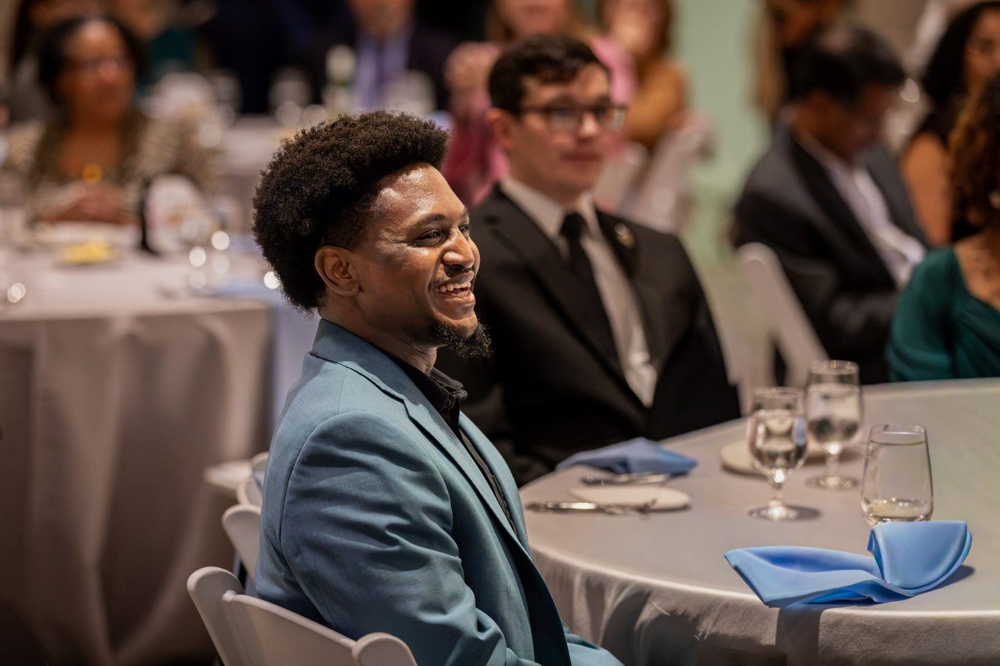
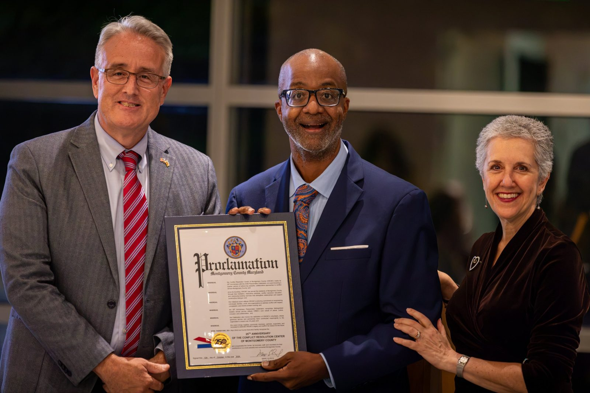

Photo
Real people, in natural light.
Headshots, portraits, and events. Every session is shot, culled, and color-corrected by hand, then delivered through a private online gallery.

portrait-goggles.jpg
portrait-actor.jpg
work-2.jpg
work-5.jpg
work-7.jpg
work-8.jpgPortraits & headshots
Priced per look. A look is one outfit. Swapping a jacket or accessory within it is free.
1 look
$549
10 retouched images.
Most booked
2 looks
$699
20 retouched images. A casual and a formal look.
3+ looks
$799
30 retouched images. For actors and personal branding sets.
Hair & makeup: $200 for up to 4 looks, $50 each after that.
Events
Conferences, galas, and team days. Unlimited shots in the booked window, edited images in a private gallery within 3 to 5 business days.
Add-ons: second photographer +$150/hr · 24-hour editing +$500 · same-day social picks +$250